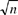
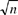
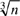

Networking Security Networking Security Networking Security Security Networking Security Networking Security Networking Charlie Kaufman Radia Perlman Mike Speciner Prentice Hall Network Security: Private Communication in a Public World, Second Edition
6.3. RSA
RSA is named after its inventors, Rivest, Shamir, and Adleman. It is a public key cryptographic algorithm that does encryption as well as decryption. The key length is variable. Anyone using RSA can choose a long key for enhanced security, or a short key for efficiency. The most commonly used key length for RSA is 512 bits.
The block size in RSA (the chunk of data to be encrypted) is also variable. The plaintext block must be smaller than the key length. The ciphertext block will be the length of the key. RSA is much slower to compute than popular secret key algorithms like DES and IDEA. As a result, RSA does not tend to get used for encrypting long messages. Mostly it is used to encrypt a secret key, and then secret key cryptography is used to actually encrypt the message.
6.3.1. RSA Algorithm
First, you need to generate a public key and a corresponding private key. Choose two large primes p and q (probably around 256 bits each). Multiply them together, and call the result n. The factors p and q will remain secret. (You won't tell anybody, and it's practically impossible to factor numbers that large.)
To generate your public key, choose a number e that is relatively prime to φ(n). Since you know p and q, you know φ(n)Âit's (p-1)(q-1). Your public key is <e,n>.
To generate your private key, find the number d that is the multiplicative inverse of e mod φ(n). <d,n> is your private key.
To encrypt a message m (< n), someone using your public key should compute ciphertext c = me mod n. Only you will be able to decrypt c, using your private key to compute m = cd mod n. Also, only you can sign a message m (< n) with signature s = md mod n based on your private key. Anyone can verify your signature by checking that m = se mod n.
That's all there is to RSA. Now there are some questions we should ask.
Why does it work? (E.g., will decrypting an encrypted message get the original message back?) Why is it secure? (E.g., given e and n, why can't someone easily compute d?) Are the operations encryption, decryption, signing, and verifying signatures all sufficiently efficient to be practical? How do we find big primes?
6.3.2. Why Does RSA Work?
RSA does arithmetic mod n, where n = pq. We know that φ(n) = (p-1)(q-1). We've chosen d and e such that de = 1 mod φ(n). Therefore, for any x, xde = x mod n. An RSA encryption consists of taking x and raising it to e. If we take the result and raise it to the d (i.e., perform RSA decryption), we'll get (xe)d, which equals xed, which is the same as x. So we see that decryption reverses encryption.
In the case of signature generation, x is first raised to the d power to get the signature and then the signature is raised to the e power for verification; the result, xde, will equal x.
6.3.3. Why Is RSA Secure?
We don't know for sure that RSA is secure. We can only depend on the Fundamental Tenet of CryptographyÂlots of smart people have been trying to figure out how to break RSA, and they haven't come up with anything yet.
The real premise behind RSA's security is the assumption that factoring a big number is hard. The best known factoring methods are really slow. To factor a 512-bit number with the best known techniques would take about thirty thousand MIPS-years [ROBS95]. We suspect that a better technique is to wait a few years and then use the best known technique.
If you can factor quickly, you can break RSA. Suppose you are given Alice's public key <e,n>. If you could find e's exponentiative inverse mod n, then you'd have figured out Alice's private key <d,n>. How can you find e's exponentiative inverse? Alice did it by knowing the factors of n, allowing her to compute φ(n). She found the number that was e's multiplicative inverse mod φ(n). She didn't have to factor nÂshe started with primes p and q and multiplied them together to get n. You can do what Alice did if you can factor n to get p and q.
We do not know that factoring n is the only way of breaking RSA. We know that breaking RSA (for example, having an efficient means of finding d, given e and n) is no more difficult than factoring [CORM91], but there might be some other means of breaking RSA.
Note that it's possible to misuse RSA. For instance, let's say I'm going to send Alice a message divulging the name of the Cabinet member who allegedly once hired a kid to mow his/her lawn, and didn't fill out all the proper IRS forms. Bob knows that's what I'm going to transmit. I'll encrypt the text string which is the guilty person's name using Alice's public key. Bob can't possibly decrypt it, because we believe RSA is secure. So what can Bob learn from eavesdropping on the encrypted data?
Well, Bob can't decrypt, but he can encrypt. He knows I'm sending one of fourteen possible messages. He takes each Cabinet member's name and encrypts it with Alice's public key. One of them will match my messageÂunless I use RSA properly. In §6.3.6 Public-Key Cryptography Standard (PKCS) we'll discuss how to use RSA properly. For now, a simple thing I can do to prevent Bob from guessing my message, encrypting with Alice's public key, and checking the result, is to concatenate the name with a large random number, say 64 bits long. Then instead of fourteen possible messages for Bob to check, there are 14x264, and checking that many messages is computationally infeasible.
6.3.4. How Efficient Are the RSA Operations?
The operations that need to be routinely performed with RSA are encryption, decryption, generating a signature, and verifying a signature. These need to be very efficient, because they will be used a lot. Finding an RSA key (which means picking appropriate n, d, and e) also needs to be reasonably efficient, but it isn't as critical as the other operations, since it is done less frequently. As it turns out, finding an RSA key is substantially more computationally intensive than using one.
6.3.4.1. Exponentiating with Big Numbers
Encryption, decryption, signing, and verifying signatures all involve taking a large number, raising it to a large power, and finding the remainder mod a large number. For the sizes the numbers have to be for RSA to be secure, these operations would be prohibitively expensive if done in the most straightforward way. The following will illustrate some tricks for doing the calculation faster.
Suppose you want to compute 12354 mod 678. The straightforward thing to do (assuming your computer has a multiple-precision arithmetic package) is to multiply 123 by itself 54 times, getting a really big product (about 100 digits), and then to divide by 678 to get the remainder. A computer could do this with ease, but for RSA to be secure, the numbers must be on the order of 150 digits. Raising a 150-digit number to a 150-digit power by this method would exhaust the capacity of all existing computers for more than the expected life of the universe, and thus would not be cost-effective.
Luckily, you can do better than that.
If you do the modular reduction after each multiply, it keeps the number from getting really ridiculous. To illustrate:
1232 = 123 · 123 = 15129 = 213 mod 678 | 1233 = 123 · 213 = 26199 = 435 mod 678 | 1234 = 123 · 435 = 53505 = 621 mod 678 |
This reduces the problem to 54 small multiplies and 54 small divides, but it would still be unacceptable for exponents of the size used with RSA.
However, there is a much more efficient method. To raise a number x to an exponent which is a power of 2, say 32, you could multiply by x 32 times, which is reasonable if you have nothing better to do with your time. A much better scheme is to first square x, then square the result, and so on. Then you'll be done after 5 squarings (5 multiplies and 5 divides):
1232 = 123 · 123 = 15129 = 213 mod 678 | 1234 = 213 · 213 = 45369 = 621 mod 678 | 1238 = 621 · 621 = 385641 = 537 mod 678 | 12316 = 537 · 537 = 288369 = 219 mod 678 | 12332 = 219 · 219 = 47961 = 501 mod 678 |
What if you're not lucky enough to be raising something to a power of 2?
First note that if you know what 123x is, then it's easy to compute 1232xÂyou get that by squaring 123x. It's also easy to compute 1232x+1Âyou get that by multiplying 1232x by 123. Now you use this observation to compute 12354.
Well, 54 is 1101102 (represented in binary). You'll compute 123 raised to a sequence of powersÂ12, 112, 1102, 11012, 110112, 1101102. Each successive power concatenates one more bit of the desired exponent. And each successive power is either twice the preceding power or one more than twice the preceding power:
1232 = 123·123 = 15129 = 213 mod 678 | 1233 = 1232·123 = 213·123 = 26199 = 435 mod 678 | 1236 = (1233)2 = 4352 = 189225 = 63 mod 678 | 12312 = (1236)2 = 632 = 3969 = 579 mod 678 | 12313 = 12312·123 = 579·123 = 71217 = 27 mod 678 | 12326 = (12313)2 = 27 2 = 729 = 51 mod 678 | 12327 = 12326·123 = 51·123 = 6273 = 171 mod 678 | 12354 = (12327)2 = 1712 = 29241 = 87 mod 678 |
In other words, raising 123 to the 54 can be done by repeated squaring, together with sporadic multiplication by 123 for the bits that are 1:
54 | = | (((((1)2+1)2)2+1)2+1)2, | so | 12354 | = | (((((123)2123)2)2123)2123)2 = 87 mod 678. |
The idea is that squaring is the same as multiplying the exponent by two, which in turn is the same as shifting the exponent left by one bit. And multiplying by the base is the same as adding one to the exponent.
In general, to perform exponentiation of a base to an exponent, you start with your value set to 1. As you read the exponent in binary bit by bit from high-order bit to low-order bit, you square your value, and if the bit is a 1 you then multiply by the base. You perform modular reduction after each operation to keep the intermediate results small.
By this method you've reduced the computation of 12354 to 8 multiplies and 8 divides. More importantly, the number of multiplies and divides rises linearly with the length of the exponent in bits rather than with the value of the exponent itself.
RSA operations using this technique are sufficiently efficient to be practical.
6.3.4.2. Generating RSA Keys
Most uses of public key cryptography do not require frequent generation of RSA keys. If generation of an RSA key is only done, for instance, when an employee is hired, then it need not be as efficient as the operations that use the keys. However, it still has to be reasonably efficient.
6.3.4.2.1. Finding Big Primes p and q
There is an infinite supply of primes. However, they thin out as numbers get bigger and bigger. The probability of a randomly chosen number n being prime is approximately 1/ln n. The natural logarithm function, ln, rises linearly with the size of the number represented in digits or bits. For a ten-digit number, there is about one chance in 23 of it being prime. For a hundred-digit number (a size that would be useful for RSA), there is about one chance in 230.
So, we'll choose a random number, and test if it is prime. On the average, we'll only have to try 230 of them before we find one that is a prime. So, how do we test if a number n is prime?
One naive method is to divide n by all numbers  
and see if the division comes out even. The problem is, that would take several universe lifetimes for each candidate prime. We said finding p and q didn't need to be as easy as generating or verifying a signature, but forever is too long.

and see if the division comes out even. The problem is, that would take several universe lifetimes for each candidate prime. We said finding p and q didn't need to be as easy as generating or verifying a signature, but forever is too long.
It turns out there is no known practical way for absolutely determining that a number of this size is prime. Fortunately, there is a test for determining that a number is probably prime, and the more time we spend testing a number the more assured we can be that the number is prime.
We'll use Euler's Theorem: For any a relatively prime to n, aφ(n) = 1 mod n. (See §7.8 Euler's Theorem for a proof.)
In the case where n is a prime, φ(n) = n - 1. The theorem then takes on a simpler form and in fact another name:
Fermat's Theorem: If p is prime and 0 < a < p, ap-1 = 1 mod p. |
You might ask the question (somebody did)Âdoes an-1 = 1 mod n hold even when n is not prime? The answer isÂusually not! A primality test, then, for a number n is to pick a number a < n, compute an-1 mod n, and see if the answer is 1. If it is not 1, n is certainly not prime. If it is 1, n may or may not be prime. If n is a randomly generated number of about a hundred digits, the probability that n isn't prime but an-1 mod n = 1 is about 1 in 1013 [POME81, CORM91]. Most people would decide they could live with that risk of falsely assuming n was prime when it wasn't. The cost of such a mistake would be that (1) RSA might failÂthey could not decrypt a message addressed to them, or (2) someone might be able to compute their private exponent with less effort than anticipated. There aren't many applications where a risk of failure of 1 in 1013 is a problem.
But if the risk of 1 in 1013 is unacceptable, the primality test can be made more reliable. A likely thing to try is using multiple values of a. If for any given n, each value of a had a probability of 1 in 1013 of falsely reporting primality, a few tests would assure even the most paranoid person. Unfortunately, there exist numbers n which are not prime, but which satisfy an-1 = 1 mod n for all values of a. They are called Carmichael numbers. Carmichael numbers are sufficiently rare that the chance of selecting one at random is nothing to lose sleep over. Nevertheless, mathematicians have come up with an enhancement to the above primality test that will detect non-primes (even Carmichael numbers) with high probability and negligible additional computation, so we may as well use it.
The method of choice for testing whether a number is prime is due to Miller and Rabin [RABI80]. We can always express n-1 as a power of two times an odd number, say 2bc. We can then compute an-1 mod n by computing ac mod n and then squaring the result b times. If the result is not 1, then n is not prime and we're done. If the result is 1, we can go back and look at those last few intermediate squarings. (If we're really clever, we'll be checking the intermediate results as we compute them.) If ac mod n is not 1, then one of the squarings took a number that was not 1 and squared it to produce 1. That number is a mod n square root of 1. It turns out that if n is prime, then the only mod n square roots of 1 are 1 and -1 (also known as n-1). Further, if n is not a power of a prime, then 1 has many square roots, and all are equally likely to be found by this test. For more on why, see §7.5 Chinese Remainder Theorem. So if the Miller-Rabin test finds a square root of 1 that is not ±1, then n is not prime. Furthermore, if n is not prime (even if it is a Carmichael number), at least ¾ of all possible values of a will show n to be composite. By trying many values for a, we can make the probability of falsely identifying n as prime inconceivably small. In actual implementations, how many values of a to try is a trade-off between performance and paranoia.
To summarize, an efficient method of finding primes is:
Pick an odd random number n in the proper range. Test n's divisibility by small primes and go back to step 1 if you find a factor. (Obviously, this step isn't necessary, but it's worth it since it has a high enough probability of catching some non-primes and is much faster than the next step). Repeat the following until n is proven not prime (in which case go back to step 1) or as many times as you feel necessary to show that n is probably prime: Pick an a at random and compute ac mod n (where c is the odd number for which n-1 = 2bc). During the computation of ac mod n, each time mod n squaring is performed, check if the result is 1; if so, check if the number that was squared (which is a square root of 1) is ±1; if not, n is not prime. Next, if the result of the computation of ac mod n is ±1, n passes the primality test for this a. Otherwise, at most b-1 times, replace the result by its square and check if it is ±1. If it is 1, n is not prime (because the previous result is a square root of 1 different from ±1). If it is -1, n passes the primality test for this a. If you've done the squaring b-1 times, n is not prime (because a(n-1)/2 is not ±1).
6.3.4.2.2. Finding d and e
How do we find d and e given p and q? As we said earlier, for e we can choose any number that is relatively prime to (p-1)(q-1), and then all we need to do is find the number d such that ed =1 mod φ(n). This we can do with Euclid's algorithm.
There are two strategies one can use to ensure that e and (p-1)(q-1) are relatively prime.
After p and q are selected, choose e at random. Test to see if e is relatively prime to (p-1)(q-1). If not, select another e. Don't pick p and q first. Instead, first choose e, then select p and q carefully so that (p-1) and (q-1) are guaranteed to be relatively prime to e. The next section will explain why you'd want to do this.
6.3.4.3. Having a Small Constant e
A rather astonishing discovery is that RSA is no less secure (as far as anyone knows) if e is always chosen to be the same number. And if e is chosen to be small, or easy to compute, then the operations of encryption and signature verification become much more efficient. Given that the procedure for finding a d and e pair is to pick one and then derive the other, it is straightforward to make e be a small constant. This makes public key operations faster while leaving private key operations unchanged. You might wonder whether it would be possible to select small values for d to make private key operations fast at the expense of public key operations. The answer is that you can't. If d were a constant, the scheme would not be secure because d is the secret. If d were small, an attacker could search small values to find d.
Two popular values of e are 3 and 65537.
Why 3? 2 doesn't work because it is not relatively prime to (p-1)(q-1) (which must be even because p and q are both odd). 3 can work, and with 3, public key operations require only two multiplies. Using 3 as the public exponent maximizes performance.
As far as anyone knows, using 3 as a public exponent does not weaken the security of RSA if some practical constraints on its use are followed. Most dramatically, if a message m to be encrypted is smallÂin particular, smaller than

Âthen raising m to the power of three and reducing mod n will simply produce the value m3. Anyone seeing such an encrypted message could decrypt it simply by taking a cube root. This problem can be avoided by padding each message with a random number before encryption, so that m3 is always large enough to be guaranteed to need to be reduced mod n.
A second problem with using 3 as an exponent is that if the same message is sent encrypted to three or more recipients each of whom has a public exponent of 3, the message can be derived from the three encrypted values and the three public keys <3, n1>, <3, n2>, <3, n3>.
Suppose a bad guy sees m3 mod n1, m3 mod n2, and m3 mod n3 and knows <3, n1>, <3, n2>, <3, n3>. Then by the Chinese Remainder computation (see §7.5 Chinese Remainder Theorem), the bad guy can compute m3 mod n1n2n3. Since m is smaller than each of the ni s (because RSA can only encrypt messages smaller than the modulus), m3 will be smaller than n1n2n3, so m3 mod n1n2n3 will just be m3. Therefore, the bad guy can compute the ordinary cube root of m3 (which again is easy if you are a computer), giving m.
Now this isn't anything to get terribly upset about. In practical uses of RSA, the message to be encrypted is usually a key for a secret key encryption algorithm and in any case is much smaller than n. As a result, the message must be padded before it is encrypted. If the padding is randomly chosen (and it should be for a number of reasons), and if it is rechosen for each recipient, then there is no threat from an exponent of 3 no matter how many recipients there are. The padding doesn't really have to be randomÂfor example, the recipient's ID would work fine.
Finally, an exponent of 3 works only if 3 is relatively prime to φ(n) (in order for it to have an inverse d). How do we choose p and q so that 3 will be relatively prime to φ(n) = (p-1)(q-1)? Clearly, (p-1) and (q-1) must each be relatively prime to 3. To ensure that p-1 is relatively prime to 3, we want p to be 2 mod 3. That will ensure p-1 is 1 mod 3. Similarly we want q to be 2 mod 3. We can make sure that the only primes we select are congruent to 2 mod 3 by choosing a random number, multiplying by 3 and adding 2, and using that as the number we will test for primality. Indeed, we want to make sure the number we test is odd (since if it's even it is unlikely to be prime), so we should start with an odd number, multiply by 3 and add 2. This is equivalent to starting with any random number, multiplying by 6 and then adding 5.
Another popular value of e is 65537. Why 65537? The appeal of 65537 (as opposed to others of the same approximate size) is that 65537 = 216+1 and it is prime. Because its binary representation contains only two 1s, it takes only 17 multiplies to exponentiate. While this is much slower than the two multiplies required with an exponent of 3, it is much faster than the 768 (on average) required with a randomly chosen 512-bit value (the typical size of an RSA modulus in practical use today). Also, using the number 65537 as a public exponent largely avoids the problems with the exponent 3.
The first problem with 3 occurs if m3 < n. Unless n is much longer than the 512 bits in typical use today, there aren't too many values of m for which m65537 < n, so being able to take a normal 65537th root is not a threat.
The second problem with 3 occurs when the same message is sent to at least 3 recipients. In theory, with 65537 there is a threat if the same message is sent encrypted to at least 65537 recipients. A cynic would argue that under such circumstances, the message couldn't be very secret.
The third problem with 3 is that we have to choose n so that φ(n) is relatively prime to 3. For 65537, the easiest thing to do is just reject any p or q which is equal to 1 mod 65537. The probability of rejection is very small (2-16), so this doesn't make finding n significantly harder.
6.3.4.4. Optimizing RSA Private Key Operations
There is a way to speed up RSA exponentiations in generating signatures and decrypting (the operations using the private key) by taking advantage of knowledge of p and q. Feel free to skip this sectionÂit isn't a prerequisite for anything else in the book. And it requires more than the usual level of concentration.
In RSA, d and n are on the order of 512-bit numbers, or 150 digits. p and q are on the order of 256 bits, or 75 digits. RSA private key operations involve taking some c (usually a 512-bit number) and computing cd mod n. It's easy to say "raise a 512-bit number to a 512-bit exponent mod a 512-bit number," but it's certainly processor-intensive, even if you happen to be a silicon-based computer. A way to speed up RSA operations is to do all the computation mod p and mod q, then use the Chinese Remainder Theorem to compute what the answer is mod pq.
So suppose you want to compute m = cd mod n.
Instead, you could take cp = c mod p and cq = c mod q and compute mp = cpd mod p and mq = cqd mod q, then use the Chinese Remainder Theorem to convert back to what m would equal mod n, which would give you cd mod n. Also, it is not necessary to raise to the dth power mod p, given that d is going to be bigger than p (by a factor of about q). Since (by Euler's Theorem) any ap-1 = 1 mod p, we can take d's value mod p-1 and use that as the exponent instead. In other words, if d = k(p-1) + r, then cd mod p = cr mod p.
So, let us compute dp = d mod (p-1) and dq = d mod (q-1). Then, instead of doing the expected RSA operation of m = cd mod n which involves 512-bit numbers, we'll compute both mp = cpdp mod p and mq = cqdq mod q and then compute m from the Chinese Remainder Theorem. To save ourselves work, since we'll be using dp and dq a lot (every time we do an RSA private key computation), we'll compute them once and remember them. Similarly, to use the Chinese Remainder Theorem at the end, we need to know p-1 mod q and q-1 mod p, so we'll precompute and remember them as well.
All told, instead of one 512-bit exponentiation, this modified calculation does two 256-bit exponentiations, followed by two 256-bit multiplies and a 512-bit add. This might not seem like a net gain, but because the exponents are half as long, using this variant makes RSA about twice as fast.
Note that to do these optimizations for RSA operations, we need to know p and q. Someone who is only supposed to know the public key will not know p and q (or else they can easily compute d). Therefore, these optimizations are only useful for the private key operations (decryption and generating signatures). However, that's okay because we can choose e to be a convenient value (like 3 or 65537) so that raising a 512-bit number to e will be easy enough without the Chinese Remainder optimizations.
6.3.5. Arcane RSA Threats
Any number x < n is a signature of xe mod n. So it's trivial to forge someone's signature if you don't care what you're signing. The trick is to find a way to sign a specific number. Typically what is being signed is sufficiently constrained so that a random number has negligible probability of being a valid message. For example, often what is being signed is a message digest padded in a specific manner. If the pad is hundreds of zero bits, it is extremely unlikely that a random number will look like a padded message digest.
If you're not careful about how you pad your message data, you may allow an attacker without knowledge of your private key to forge your signature on valid messages.
Note: RSA deals with large numbers, and there is unfortunately more than one way to represent such numbers. In what follows, we have chosen to order the octets left to right from most significant to least significant.
6.3.5.1. Smooth Numbers
A smooth number is defined as one that is the product of reasonably small primes. There's no absolute definition of a smooth number, since there's no real definition of reasonably small. The more compute power the attacker has at her disposal, and the more signatures she has access to, the larger the primes can be.
The threat we are about to describe is known as the smooth number threat. It is really only of theoretical interest, because of the immense amount of computation, gathering of immense numbers of signed messages, and luck involved. However, it costs very little to have an encoding that avoids this threat. The smooth number threat was discovered by Desmedt and Odlyzko [DESM86].
The first observation is that if you have signed m1 and m2, and a bad guy Carol can see your signature on m1 and m2, she can compute your signature on m1·m2, and on m1/m2, and m1j, and on m1j·m2k. For instance, if Carol sees m1d mod n (which is your signature on m1), then she can compute your signature on m12 by computing (m1d mod n)2 mod n (see Homework Problem 8).
If Carol collects a lot of your signed messages, she will be able to compute your signature on any message that can be computed from her collection by multiplication and division. If the messages you sign are mostly smooth, there will be a lot of other smooth messages on which she will be able to forge your signature.
Suppose she collects your signatures on two messages whose ratio is a prime. Then she can compute your signature on that prime. If she's lucky enough to get many such message pairs, she can compute your signature on lots of primes, and then she can forge your signature on any message that is the product of any subset of those primes, each raised to any power. With enough pairs, she will be able to forge your signature on any message that is a smooth number.
Actually, Carol does not have to be nearly that lucky. With as few as k signatures on messages which are products of different subsets of k distinct primes, she will be able to isolate the signatures on the individual primes through a carefully chosen set of multiplications and divisions.
The typical thing being signed with RSA is a padded message digest. If it is padded with zeroes, it is much more likely to be smooth than is a random mod n number. A random mod n quantity is extremely unlikely to be smooth (low enough probability so that if you are signing random mod n numbers, we can assume Carol would have to have a lot of resources and a lot of luck to find even one smooth number you've signed, and she might need millions of them in order to mount the attack).
Padding on the left with zeroes keeps the padded message digest small and therefore likely to be smooth. Padding on the right with zeroes is merely multiplying the message digest by some power of 2, and so isn't any better.
Another tempting padding scheme is to pad on the right with random data. That way, since you are signing fairly random mod n numbers, it is very unlikely that any of the messages you sign will be smooth, so Carol won't have enough signed smooth messages to mount the threat. However, this leaves us open to the next obscure threat.
6.3.5.2. The Cube Root Problem
Let's say you pad on the right with random data. You chose that scheme so that there is a negligible probability that anything you sign will be smooth. However, if the public exponent is 3, this enables Carol to forge your signature on virtually any message she chooses!
Let's say Carol wants your signature on some message. The message digest of that message is h. Carol pads h on the right with zeroes. She then computes its ordinary cube root and rounds up to an integer r. Now she has forged your signature, because re = r3 = (h padded on the right with a seemingly random number).
6.3.6. Public-Key Cryptography Standard (PKCS)
It is useful to have some standard for the encoding of information that will be signed or encrypted through RSA, so that different implementations can interwork, and so that the various pitfalls with RSA can be avoided. Rather than expecting every user of RSA to be sophisticated enough to know about all the attacks and develop appropriate safety measures through careful encoding, RSADSI has developed a standard known as PKCS which recommends encodings. PKCS is actually a set of standards, called PKCS #1 through PKCS #15. There are also two companion documents, An overview of the PKCS standards, and A layman's guide to a subset of ASN.1, BER, and DER. (ASN.1 = Abstract Syntax Notation 1, BER = Basic Encoding Rules, and DER = Distinguished Encoding RulesÂaren't you glad you asked?).
The PKCS standards define the encodings for things such as an RSA public key, an RSA private key, an RSA signature, a short RSA-encrypted message (typically a secret key), a short RSA-signed message (typically a message digest), and password-based encryption.
The threats that PKCS has been designed to deal with are:
encrypting guessable messages signing smooth numbers multiple recipients of a message when e = 3 encrypting messages that are less than a third the length of n when e = 3 signing messages where the information is in the high-order part and e = 3
6.3.6.1. Encryption
PKCS #1 defines a standard for formatting a message to be encrypted with RSA. RSA is not generally used to encrypt ordinary data. The most common quantity that would be encrypted with RSA is a secret key, and for performance reasons the ordinary data would be encrypted with the secret key.
The recommended standard is
0 | 2 | at least eight random nonzero octets | 0 | data |
The actual data to be encrypted, usually a secret key, is much smaller than the modulus. If it's a DES key, it's 64 bits. If multiple DES encryption is used, then there might be two DES keys there, or 128 bits.
The top octet is 0, which is a good choice because this guarantees that the message m being encrypted is smaller than the modulus n. (If m were larger than n, decryption would produce m mod n instead of m.) Note that PKCS specifies that the high-order octet (not bit!) of the modulus must be non-zero.
The next octet is 2, which is the format type. The value 2 is used for a block to be encrypted. The value 1 is used for a value to be signed (see next section).
Each octet of padding is chosen independently to be a random nonzero value. The reason 0 cannot be used as a padding octet is that 0 is used to delimit the padding from the data.
Let's review the RSA threats and see how this encoding addresses them:
encrypting guessable messagesÂSince there are at least eight octets of randomly chosen padding, knowing what might appear in the data does not help the attacker who would like to guess the data, encrypt it, and compare it with the ciphertext. The attacker would have to guess the padding as well, and this is infeasible. sending the same encrypted message to more than three recipients (assuming 3 is chosen for e)ÂAs long as the padding is chosen independently for each recipient, the quantities being encrypted will not be the same. encrypting messages that are less than a third the length of n when e = 3ÂBecause the second octet is nonzero, the message will be guaranteed to be more than a third the length of n.
6.3.6.2. EncryptionÂTake 2
There was an attack on SSL (see Chapter 19 SSL/TLS) that could have been interpreted as a flaw in the design of SSL, but the world has come to see it as a flaw in the PKCS #1 encryption format, and there is a PKCS #1 version 2 format that fixes the "flaw". The attack is known as the million message attack, and occurs because SSL made some incorrect assumptions about the services PKCS #1 padding provides.
In the SSL protocol, the client sends the server a randomly chosen key padded according to PKCS #1 and encrypted using RSA. SSL decrypts the value, and, if the padding is correct, sends a response encrypted with the enclosed key. If after the decryption the padding is not correct, it sends an error message. The problem is that this allows an attacker to use the server as an oracle: it can send the server a message and the server will tell it whether the message (when decrypted) has proper PKCS #1 padding. Some SSL servers were particularly helpful and would say whether the padding was wrong because the first two octets were something other than 0 and 2 or whether it was wrong because the length of the encrypted quantity was something other than what was expected.
Daniel Bleichenbacher [BLEI98] figured out how an eavesdropper who picked up a key encrypted for a server could carefully craft variations of that encrypted key such that if the server would identify some of those variations which when decrypted began with the octets 0 and 2, the attacker could eventually figure out the encrypted key. The most helpful servers would identify one message in 216 as having that form, allowing the eavesdropper to recover the encrypted key after sending about a million messages (most of them invalid).
Attacks of this sort can be avoided if the padding for encryption includes enough redundancy that the probability of a randomly chosen value decrypting into something that looks like it is properly padded is negligible. (One in a million is not considered negligible to cryptographers. To them "negligible" should be less than one in 2100 or so.) A particularly complex scheme for doing that is specified in PKCS #1 version 2, also known as OAEP [BELL94] and standardized in IEEE P1363.
Because this is an obscure attack easily avoided by other means (like not being so helpful when people send you invalid messages), the world has not scrambled to migrate to this new padding. But it will probably be mandated in newly defined protocols where backwards compatibility is not an issue.
6.3.6.3. Signing
PKCS #1 also defines a standard for formatting a message to be signed with RSA. Usually the data being signed is a message digest, typically 128 bits. As with encryption, padding is required.
0 | 1 | at least eight octets of ff16 | 0 | ASN.1-encoded digest type and digest |
As with encryption, the top octet of 0 ensures that the quantity to be signed will be less than n. The next octet is the PKCS type, in this case, a quantity to be signed. The padding ensures that the quantity to be signed is very large and therefore unlikely to be a smooth number.
Inclusion of the digest type instead of merely the digest serves two purposes. It standardizes how to tell the other party which digest function you used, and it prevents an obscure threat. The threat is that one of the message digest functions, say MD4, might be weak, so that bad guys with big budgets can generate a message with a particular MD4 message digest. Now suppose you were suspicious of MD4 and therefore used MD5. You signed the MD5 message digest of your message m. If the digest type were not included in the quantity that you RSA signed, then a bad guy could generate some message m' such that MD4(m') = MD5(m), and use the same signature you'd generated for m as the signature for m'. Including the digest type in the signature means you're at risk only for the cryptographic strength of the message digest functions you choose to use.
 |